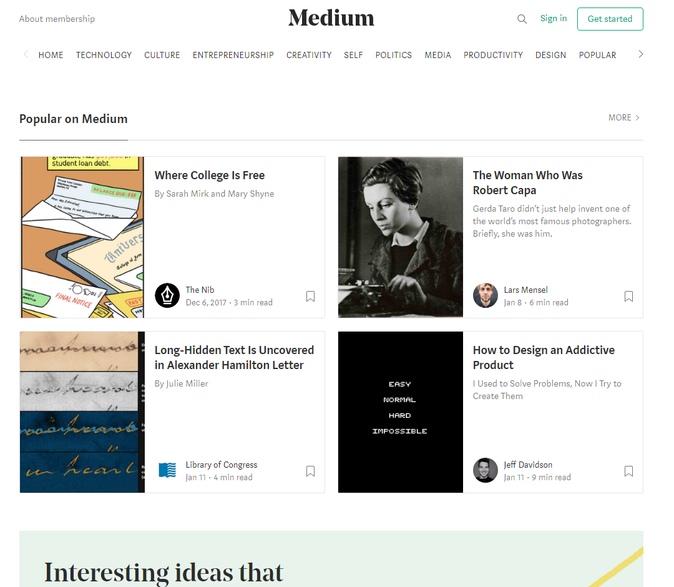

When I started this project I planned on making a very minimalistic design for the website as well as for its features. I also planned to have only one page but have it really long so I could fit everything on that one page. I didn’t end up going through with these ideas due to my inexperience with HTML and CSS. I wasn’t able to achieve the look and feeling I was going for so scraped my initial ideas and spoke to my team about going in a new direction. After a lengthy brainstorm I came to the conclusion that I still wanted to have minimalistic design for the website but I was also want the navigation of it all to be really simple. I wanted a 5-year-old to be able to figure out how to use this website so I went into the a minimalistic and simplified look to the website. Now I know the website doesn’t have many bells and whistles and it probably could use some artistic expression but creativity is one of my flaws. I’m not a very creative person so trying to come up with a modern looking design for the website that looked somewhat decent was difficult for me. Even with all the research I did into how moderns websites flow and look I wasn’t able to get my website to a satisfactory level of creative expression. Since make the website look nice and fancy I went with the minimalistic and simple approach I mentioned earlier. As long as the website works and conveys the message necessary then the website is a success in my book. I choose the black, grey, and yellow colour scheme because, well, as I said I’m not very creative and those colour seem to work for anything. It may look dull to others by I think my website has a purpose and it executes that purpose effectively and efficiently. During the development of the website I made sure to make everything mobile friendly. I’ve made everything fall into place with the use of media queries on mobile. It took a while to get every page working perfectly but once it’s all set up it’s wonderful. I was told in the group brain storm that media queries were the way to go for mobile compatibility.
